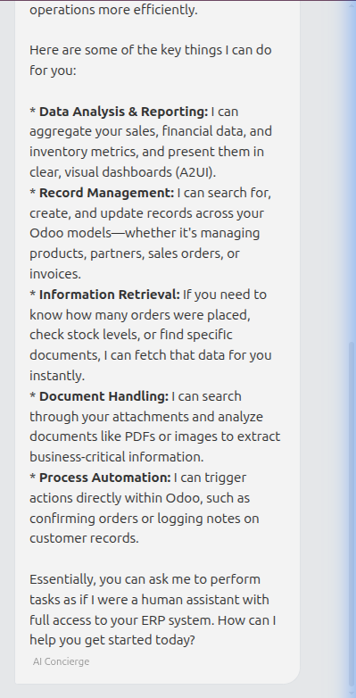
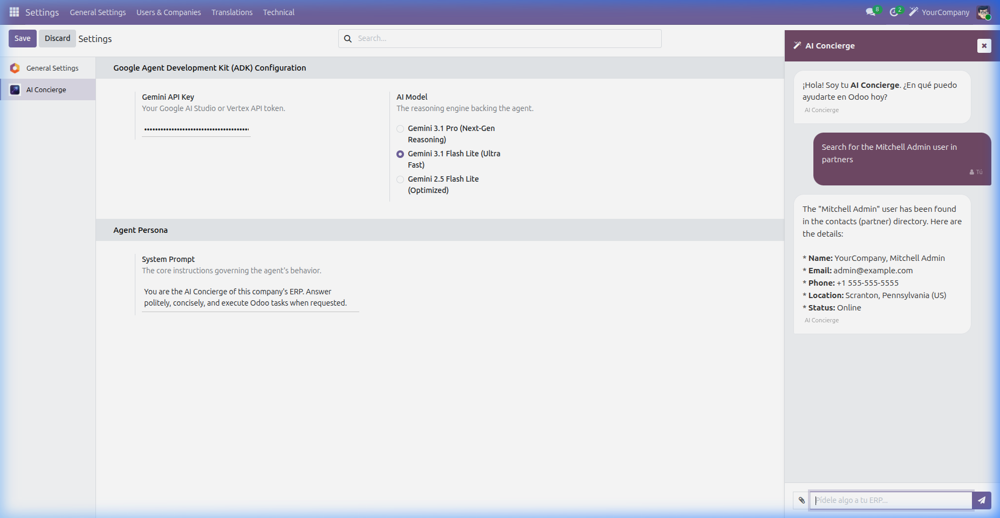
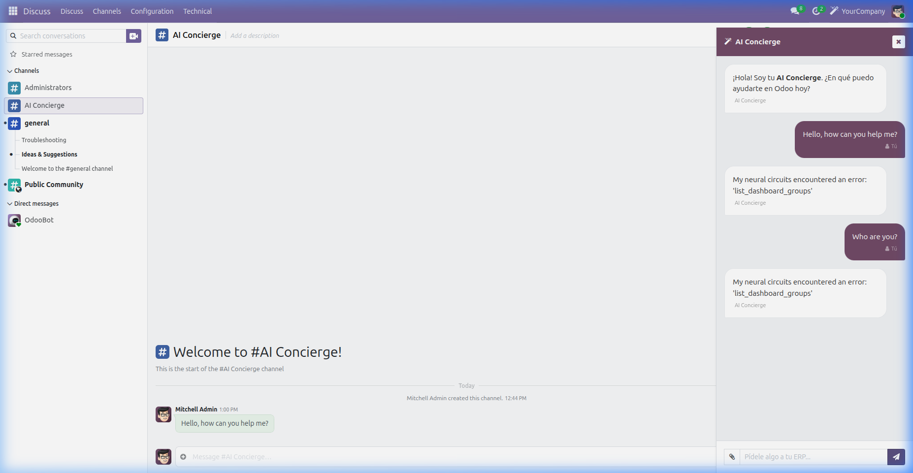
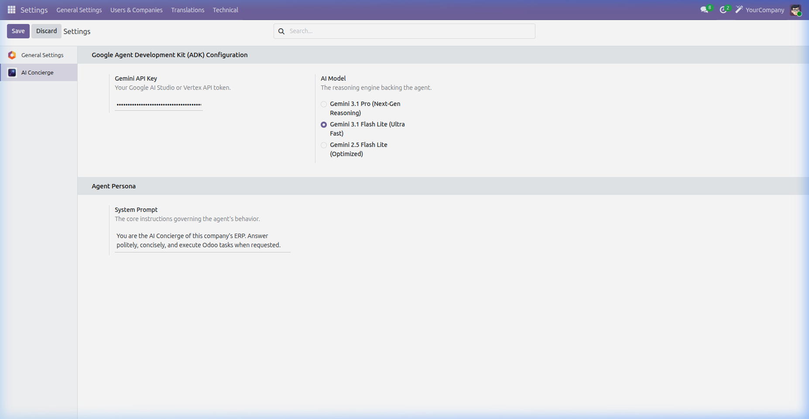

AI Concierge (Odoo Copilot) is a powerful integration solution that seamlessly connects Google's Gemini Models with your Odoo ERP. It eliminates manual data retrieval and operational bottlenecks by letting an intelligent bot handle record searching, data analysis, and workflow triggering directly from your Discuss App.
Yes, the AI Concierge natively embeds into the Odoo Discuss app. It uses an advanced ADK Orchestrator to route your natural language questions into real Odoo ORM commands. It fully respects the Odoo security model based on the logged-in user.

Because the agent uses native 'Function Tools', it searches through your CRM contacts, Sales orders, and internal records flawlessly. It formats lists cleanly and tells you exactly what you need to know without navigating through endless menus.

Open the Copilot sidebar from anywhere in Odoo. Being fully integrated with the OWL Framework, the system feels snappy, responsive, and keeps state across all your active business modules.

No hassles for tying up your AI the first time! Connect natively to Google's cutting edge infrastructure in a Bring Your Own Key (BYOK) model. Select between different Gemini models based on cost and reasoning requirements.

Yes, AI Concierge is fully compatible with both Odoo Community and Odoo Enterprise version 19.0.
We use a Bring Your Own Key (BYOK) model. You input your Google AI Studio or Vertex AI API key, ensuring you only pay for exactly what you use at wholesale prices, directly to the AI provider.
Absolutely. The AI operates within the confines of Odoo's standard ORM. It can only read or write data that the requesting user's Access Rights and Record Rules permit.
Yes, purchasing grants you 90 days of complementary support and free upgrades to future minor versions of the module within the major Odoo series.
If you face any issues while using our app, we provide complementary support for a duration of 90 days from the date of purchase. Created with passion by TMFCoders SL.
Email: info@tmfcoders.com
Website: tmfcoders.com